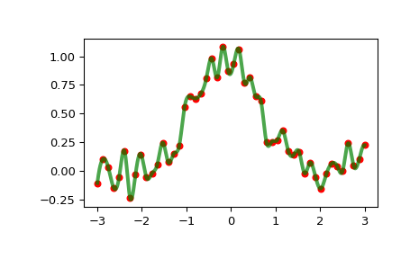

scipy.interpolate.InterpolatedUnivariateSpline¶
-
class
scipy.interpolate.InterpolatedUnivariateSpline(x, y, w=None, bbox=[None, None], k=3, ext=0, check_finite=False)[source]¶ 1-D interpolating spline for a given set of data points.
Fits a spline y = spl(x) of degree k to the provided x, y data. Spline function passes through all provided points. Equivalent to
UnivariateSplinewith s=0.- Parameters
- x(N,) array_like
Input dimension of data points – must be strictly increasing
- y(N,) array_like
input dimension of data points
- w(N,) array_like, optional
Weights for spline fitting. Must be positive. If None (default), weights are all equal.
- bbox(2,) array_like, optional
2-sequence specifying the boundary of the approximation interval. If None (default),
bbox=[x[0], x[-1]].- kint, optional
Degree of the smoothing spline. Must be 1 <= k <= 5.
- extint or str, optional
Controls the extrapolation mode for elements not in the interval defined by the knot sequence.
if ext=0 or ‘extrapolate’, return the extrapolated value.
if ext=1 or ‘zeros’, return 0
if ext=2 or ‘raise’, raise a ValueError
if ext=3 of ‘const’, return the boundary value.
The default value is 0.
- check_finitebool, optional
Whether to check that the input arrays contain only finite numbers. Disabling may give a performance gain, but may result in problems (crashes, non-termination or non-sensical results) if the inputs do contain infinities or NaNs. Default is False.
See also
UnivariateSplineSuperclass – allows knots to be selected by a smoothing condition
LSQUnivariateSplinespline for which knots are user-selected
splrepAn older, non object-oriented wrapping of FITPACK
splev,sproot,splint,spaldeBivariateSplineA similar class for two-dimensional spline interpolation
Notes
The number of data points must be larger than the spline degree k.
Examples
>>> import matplotlib.pyplot as plt >>> from scipy.interpolate import InterpolatedUnivariateSpline >>> x = np.linspace(-3, 3, 50) >>> y = np.exp(-x**2) + 0.1 * np.random.randn(50) >>> spl = InterpolatedUnivariateSpline(x, y) >>> plt.plot(x, y, 'ro', ms=5) >>> xs = np.linspace(-3, 3, 1000) >>> plt.plot(xs, spl(xs), 'g', lw=3, alpha=0.7) >>> plt.show()
Notice that the
spl(x)interpolates y:>>> spl.get_residual() 0.0
Methods
__call__(x[, nu, ext])Evaluate spline (or its nu-th derivative) at positions x.
antiderivative([n])Construct a new spline representing the antiderivative of this spline.
derivative([n])Construct a new spline representing the derivative of this spline.
derivatives(x)Return all derivatives of the spline at the point x.
Return spline coefficients.
Return positions of interior knots of the spline.
Return weighted sum of squared residuals of the spline approximation.
integral(a, b)Return definite integral of the spline between two given points.
roots()Return the zeros of the spline.
Continue spline computation with the given smoothing factor s and with the knots found at the last call.